ORMUZ Colapsa el cese al fuego; CENTCOM golpea ~90 objetivos, incluido el puerto de Chabahar; el Brent supera los US$85///DÓLAR · BRICS+ India preside la 18.ª cumbre en Nueva Delhi; la «desdolarización 2.0» avanza en infraestructura de pagos, no en retórica; el dólar sigue en ~90 % del comercio mundial///AGUA · CR Heineken notifica ante Coprocom la compra de RainForest Water; el manantial de Sarapiquí queda fuera del trato inmobiliario///MIGRACIÓN Las deportaciones de costarricenses en 2026 ya superan todo el segundo semestre anterior; 43.686 electores ticos viven en EE. UU.///PALEOCLIMA Stanford confirma en PNAS por qué murió el 96 % de la vida marina hace 252 millones de años: calor más desoxigenación///CIENCIA Una IA de la Universidad de Osaka ordena 16 descriptores rivales del agua supercongelada y distingue sus dos estados líquidos///
Agente Noticioso Crítico de Actualidad — Antropología Dinámica del Devenir
BOLETÍN SEMANAL
El estrecho, la marca y el aliento del océano
Edición: N.° 013 · edición completaSemana: 8 al 15 de julio de 2026Cierre: miércoles 15 jul, 08:15 (San José)Notas: 6 · Nacional: 1 · Ciencia: 2Registros: MEEE-G · ADD · Sistemas-Mundo
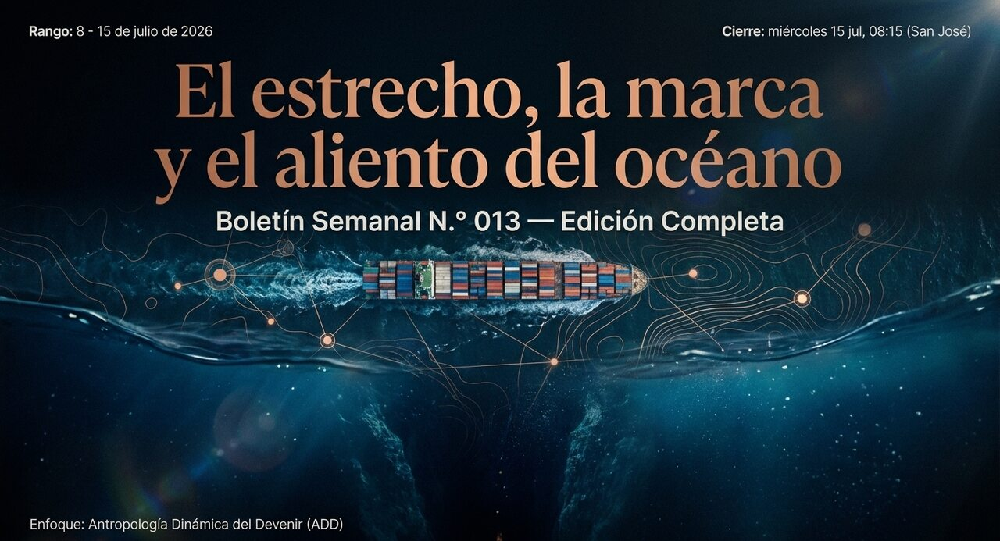
Boletín Semanal N.° 013 · tres profundidades de la semana: el estrecho, la marca del agua y el océano que dejó de respirar.
Panorama de la semana
La semana no trae un solo eje, sino tres profundidades que rara vez se miran juntas. En la superficie, el estrecho de Ormuz volvió a cerrarse sobre el precio global de la energía y arrastró consigo la ilusión de un alto el fuego. Un nivel más abajo, una marca de agua nacida en Sarapiquí cambió de dueño, y con ella se movió una pieza pequeña pero reveladora de cómo el capital transnacional captura el valor simbólico costarricense. Y en el fondo geológico, un equipo de Stanford confirmó por qué murió casi toda la vida marina hace 252 millones de años —con una advertencia climática incómodamente contemporánea.
Seis notas, tres lentes, una misma pregunta de fondo: con qué grado de certeza sabemos lo que creemos saber.
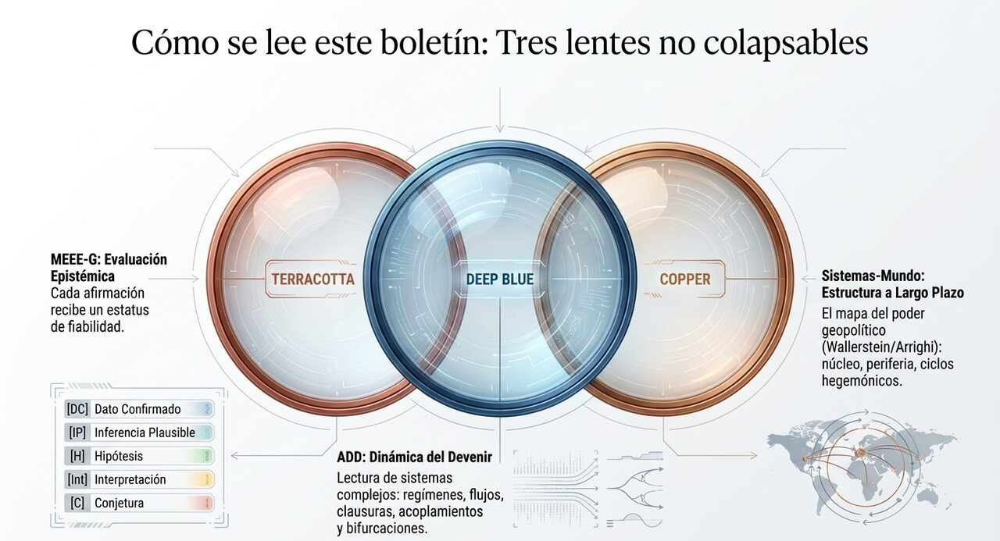
Tres lentes no colapsables: evaluación epistémica (MEEE-G), lectura dinámica (ADD) y estructura de largo plazo (Sistemas-Mundo).El método ANCA-ADD frente al ruido digital — publicación reflexiva, archivo documental y normativa que resiste contrastación.
01Política y geopolítica
Ormuz otra vez: el alto el fuego que no fue
El acuerdo interino de junio se rompió; volvieron los ataques a buques, la respuesta militar estadounidense y el bloqueo. El crudo lo sintió de inmediato.
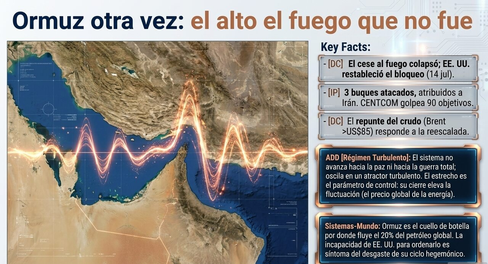
Lectura ADD: régimen turbulento sin bifurcación resuelta — el estrecho como parámetro de control del sistema.
Hechos verificados
El frágil cese al fuego entre Estados Unidos e Irán —el memorando de entendimiento de mediados de junio, pensado para abrir 60 días de negociación— se dio por colapsado esta semana. Tres buques comerciales fueron atacados al transitar el estrecho de Hormuz: el M/T Al Rekayyat (bandera de Islas Marshall), el M/T Wedyan (Arabia Saudita) y el M/T Cyprus Prosperity (Liberia); Estados Unidos y sus aliados del Golfo atribuyeron los ataques a Irán.
El 9 de julio, el Comando Central estadounidense (CENTCOM) lanzó su mayor operación desde la tregua: cerca de 90 objetivos militares y logísticos golpeados —incluido, por primera vez desde el cese al fuego, el puerto de Chabahar, la única salida oceánica de Irán fuera del Golfo Pérsico, y una instalación aeroespacial de la Guardia Revolucionaria en Bushehr. Irán respondió con misiles y drones hacia bases estadounidenses en Kuwait y Baréin; un bombero murió en el aeropuerto de Iranshahr.
El 14 de julio, Washington restableció el bloqueo naval sobre Irán y revirtió el levantamiento de sanciones al petróleo iraní que formaba parte del acuerdo. Trump, desde la cumbre de la OTAN en Turquía, declaró el cese «terminado» y calificó de «pérdida de tiempo» negociar con Teherán.
La traducción económica fue directa: el Brent superó los US$85 y el crudo llegó a tocar los US$87, con la gasolina y el diésel rebotando aún más rápido; los precios, aun así, siguen por debajo de los máximos de guerra que rozaron los US$120. Por Hormuz pasaba, antes del conflicto, cerca del 20 % del petróleo y del GNL del mundo. Dato de matiz: Trump se retiró de imponer un cargo del 20 % sobre los cargamentos que cruzan el estrecho.
Contexto
Este es el mismo hilo que el boletín viene rastreando desde marzo: la guerra iniciada el 28 de febrero de 2026, la intermitencia de Ormuz, el memorando del 17 de junio y el «respiro del crudo» que analizamos en la N.° 012. La reapertura resultó ser una tregua táctica, no una resolución. El patrón —cierre, negociación, reapertura parcial, nuevo cierre— se ha repetido lo suficiente como para constituir, él mismo, el fenómeno a analizar.
Análisis epistémico · MEEE-G
Afirmación
Código
Fundamento
El cese al fuego interino colapsó y EE. UU. restableció el bloqueo (14 jul).
[DC]
Reportes convergentes de Bloomberg, CNBC, AP; declaraciones oficiales de CENTCOM.
Los ataques a los tres buques fueron ejecutados por Irán.
[IP]
Atribución de EE. UU. y aliados del Golfo; parte interesada. Sin verificación independiente al cierre.
El repunte del crudo (Brent >US$85) responde a la reescalada.
[DC]
Correlación temporal directa y consenso de analistas de mercado (Lloyd's List, Medlock).
El conflicto deriva hacia una guerra regional ampliada.
[H]
Escenario abierto; los golpes descritos como «muy focalizados» acotan, por ahora, la escalada.
Lectura dinámica · ADD
Régimen: turbulento oscilante, sin bifurcación resueltaParámetro de control: transitabilidad efectiva del estrecho
El sistema no está ni en régimen laminar (la reproducción estable de la ruta comercial) ni en bifurcación plena (una guerra regional irreversible): está atrapado en un régimen turbulento oscilante, un atractor que reorganiza el mismo estado una y otra vez sin resolverlo. El estrecho funciona como el parámetro de control del sistema —en el sentido estricto de la ADD: la variable cuyo cruce de umbral reorganiza todo lo demás. Cada cierre eleva la fluctuación (el «risk premium» que los mercados incorporan); cada reapertura la amortigua parcialmente. Lo relevante es que la amplitud de la oscilación no decrece: el sistema no se está estabilizando, está aprendiendo a vivir en la turbulencia.
Aquí la clausura operacional de cada actor determina su respuesta más que la perturbación externa: Irán procesa el bloqueo según su propia organización (soberanía sobre el estrecho como identidad no negociable), y EE. UU. procesa el ataque a buques según la suya (libertad de navegación como axioma). Ninguno «reacciona» al otro; cada uno responde a la perturbación según lo que su organización interna define como amenaza. Por eso la negociación fracasa: no comparten qué cuenta como perturbación.
◆ Sistemas-Mundo · Wallerstein / Arrighi
Ormuz es un gradiente energético-material del sistema-mundo: por él fluye la energía fósil que sostiene la producción del núcleo y de las semiperiferias industriales asiáticas. Quien controla el cuello de botella controla un punto de disipación crítico de toda la economía-mundo. En clave de Arrighi, la incapacidad de EE. UU. para cerrar el conflicto —para imponer un orden estable en una vía que históricamente garantizaba con su poder naval— es un síntoma de la turbulencia terminal del ciclo hegemónico: el hegemón todavía puede destruir, pero ya no puede ordenar. Que Irán sea hoy miembro pleno de los BRICS+ (nota 02) inscribe este choque en una disputa estructural más amplia que la bilateral.
★ Relevancia para Costa Rica
[IP] Costa Rica importa la totalidad de sus combustibles: es un nodo terminal de esa cadena. El repunte del Brent se traslada, con rezago de semanas, al precio de RECOPE y a la estructura de costos de todo el país —transporte, electricidad térmica de respaldo, fertilizantes. La vulnerabilidad es directa y sin amortiguadores propios.
[Int] La lección de resiliencia no es coyuntural sino estructural: la única palanca real que el país tiene ante la turbulencia de Ormuz es reducir su exposición al gradiente —electrificación del transporte, diversificación de proveedores, reservas estratégicas. La dependencia se gestiona, no se elimina, pero la magnitud de la exposición sí es una decisión de política.
Escenarios plausibles
Nueva tregua táctica Presión de mercados y aliados del Golfo fuerza otro cese frágil; el crudo cede parcialmente y el ciclo se reinicia.Turbulencia crónica La oscilación cierre-reapertura se institucionaliza como estado normal; prima de riesgo permanente sobre la energía global.Escalada regional Un golpe a infraestructura energética o civil rompe el umbral y arrastra a otros actores del Golfo; bifurcación hacia guerra ampliada.
02Política y geopolítica · Estructural
El reajuste multipolar y la lenta erosión del dólar
India preside los BRICS+ en 2026 y empuja una «desdolarización 2.0» que avanza en la infraestructura de pagos mucho más que en la retórica de una moneda común. No es el fin del dólar: es el otoño de un ciclo.
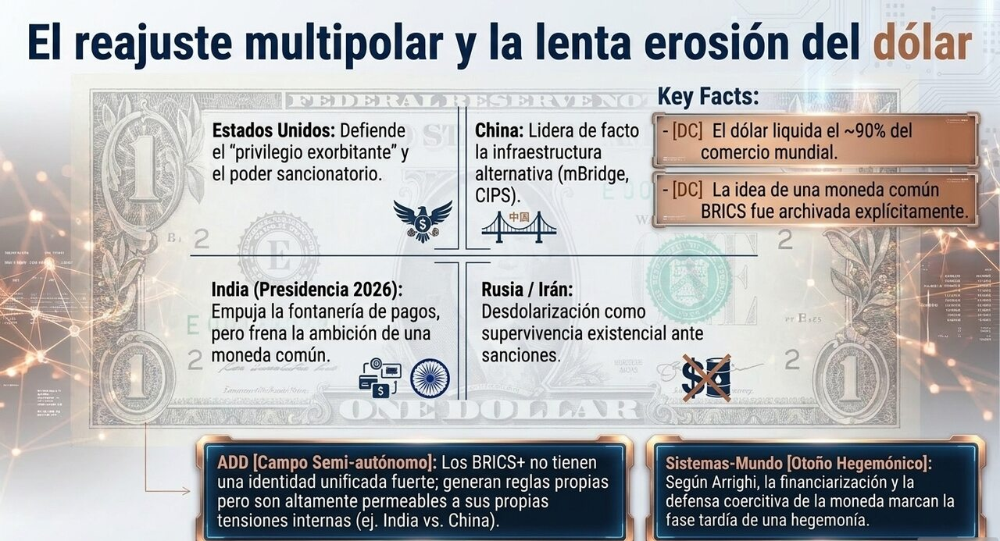
Mapa de actores e incentivos: EE. UU. defiende el privilegio exorbitante; China lidera de facto la infraestructura alternativa.
Hechos verificados
Cada pocas semanas un titular anuncia el fin del dólar; cada pocas semanas el dólar sigue liquidando cerca del 90 % del comercio mundial y representando entre el 58 % y el 60 % de las reservas de los bancos centrales, según el FMI. Su cuota en reservas declina de forma modesta y sostenida desde hace una década, pero la participación perdida se repartió entre varias monedas, no se concentró en una rival. Entre esos dos hechos —la retórica del colapso inminente y la persistencia terca de la moneda— vive el fenómeno real, que no es un evento sino un proceso.
Bajo presidencia india y el lema «Building Resilience and Innovation for Cooperation and Sustainability», los BRICS+ preparan su 18.ª cumbre en Nueva Delhi (prevista hacia setiembre de 2026). El bloque ampliado —que ya incluye a Irán, Egipto, Etiopía, Emiratos e Indonesia— representa más del 40 % de la población mundial y más del 25 % del PIB global, superando al G7 en paridad de poder adquisitivo. Su agenda de «desdolarización» se movió de la retórica a la infraestructura: BRICS Pay como alternativa descentralizada a SWIFT (enlaza el SPFS ruso, el CIPS chino y el UPI indio); la plataforma mBridge de monedas digitales de banco central, que hacia noviembre de 2025 había procesado transacciones por US$55.490 millones; y «la Unit», un token de liquidación piloteado el 31 de octubre de 2025, respaldado 40 % en oro y 60 % en una canasta de divisas del bloque. Dato de matiz decisivo: la idea de una moneda común BRICS fue explícitamente archivada; el propio canciller indio Jaishankar afirmó que «no hay política de nuestra parte para reemplazar el dólar».
Contexto
La reacción del núcleo es coercitiva: Trump reiteró en junio de 2026 su amenaza de imponer aranceles del 100 % a cualquier país BRICS que respalde una moneda alternativa al «poderoso dólar», trazando la desdolarización como línea roja. Frente a ello, el Atlantic Council sostiene que el dólar está «seguro en el corto y mediano plazo», y el Stimson Center concluye que la presión arancelaria acelera la cohesión defensiva del bloque, pero que este sigue demasiado dividido internamente para operar como actor geopolítico unificado al modo de la OTAN o el G7. La razón de fondo es técnica: la fuerza de una moneda de reserva no depende solo del tamaño económico, sino de mercados financieros profundos, certeza jurídica, estabilidad política y aceptación global —requisitos que ninguna rival reúne hoy. Que Irán, hoy miembro pleno del bloque, sea el mismo actor del choque de Ormuz (nota 01) inscribe esa crisis en esta disputa estructural más amplia. Es un reajuste, no una ruptura.
Mapa de actores e incentivos
Actor
Postura e incentivo
Estados Unidos
Defiende el «privilegio exorbitante»: deuda barata, poder sancionatorio, influencia sistémica. Incentivo: preservar el monopolio; el arancel como disuasión.
China
Lidera de facto la desdolarización; el renminbi domina el comercio intra-bloque. Incentivo: internacionalizar el yuan, blindarse ante sanciones.
India (presidencia 2026)
Empuja la infraestructura pero frena la ambición monetaria. Incentivo: autonomía sin ruptura; limitar el dominio chino interno.
Rusia / Irán (sancionados)
Necesitan evadir el sistema financiero occidental. Incentivo: supervivencia; la desdolarización es existencial, no táctica.
Análisis epistémico · MEEE-G
Afirmación
Código
Fundamento
El dólar es ~58 % de las reservas y ~90 % de las transacciones.
[DC]
Datos del FMI, convergentes en múltiples fuentes institucionales.
La infraestructura de pagos alternativa a SWIFT avanza operativamente.
[DC]
Cifras verificables de mBridge, BRICS Pay y el piloto de la Unit.
La moneda común BRICS fue archivada.
[DC]
Declaración expresa de la cancillería india; consenso de analistas.
El dólar enfrenta una erosión estructural de largo plazo.
[IP]
Tendencia declinante modesta y sostenida; sin rival capaz de sustituirlo a corto plazo.
La presión arancelaria acelera la cohesión del bloque.
[IP]
Tesis del Stimson Center; plausible, pero el efecto neto es disputado.
Los BRICS constituyen un bloque geopolítico unificado.
[Int]
Hay coordinación funcional, no unidad estratégica (India limita a China).
Estamos ante una transición hegemónica en curso.
[H]
Hipótesis estructural (Arrighi); coherente con la evidencia, no verificable en tiempo real.
El multipolarismo ampliará el margen de las periferias.
[C]
Conjetura normativa (voz de Dussel); posible pero sin evidencia concluyente.
Lectura dinámica · ADD
Régimen: laminar en el centro, turbulencia creciente en los bordesParámetro de control: credibilidad del dólar como refugio
El sistema monetario internacional opera hoy en un régimen laminar con turbulencia creciente en los bordes: el centro (el dólar como atractor dominante) reproduce su estabilidad, mientras las fluctuaciones en la periferia —pagos alternativos, oro, monedas locales— aumentan en frecuencia y amplitud. Hoy hay un atractor único y se está construyendo la posibilidad, no la realidad, de un segundo. Un sistema con dos atractores puede oscilar entre ellos o bifurcarse; uno con un solo atractor, no.
Los BRICS+ no tienen clausura organizacional fuerte: son un campo semi-autónomo (Moore) —generan reglas propias pero permeables a fuerzas externas y a sus tensiones internas. Su acoplamiento es reactivo: la cohesión no emerge de una identidad compartida sino de una perturbación común (la sanción, el arancel, la «arma-dolarización» que denuncia Putin). Por eso avanzan donde pueden coordinarse sin consenso profundo —la fontanería técnica de los pagos— y se estancan donde haría falta clausura simbólica compartida, como una moneda. El parámetro de control no es el tamaño de los BRICS, sino la credibilidad del dólar como refugio, que depende menos de sus rivales que de las propias decisiones estadounidenses. La paradoja dinámica: el hegemón erosiona su propia clausura al defenderla con instrumentos coercitivos.
◆ Sistemas-Mundo · el ciclo hegemónico de Arrighi
El marco decisivo es Giovanni Arrighi. Cada hegemonía —genovesa, holandesa, británica, estadounidense— atraviesa «ciclos sistémicos de acumulación» que terminan en una fase de financiarización: el «otoño» del ciclo, cuando el hegemón, perdiendo su ventaja productiva, se repliega hacia el dominio financiero. El dólar como dinero mundial es la infraestructura financiera de la hegemonía estadounidense; su erosión no es un accidente, sino el síntoma esperable de la fase tardía.
Siguiendo a Braudel, Arrighi distingue entre crisis-señal (el primer aviso de que el ciclo se agota, seguido de un otoño financiero que puede durar décadas) y crisis terminal (el relevo efectivo del hegemón). La desdolarización actual pertenece a la primera, no a la segunda. La lección es de escala temporal: la libra esterlina siguió siendo central décadas después de que el poder productivo migrara a EE. UU.; el dólar no la desplazó hasta bien entrado el siglo XX, tras dos guerras mundiales. La arquitectura del sucesor se construye durante el otoño del hegemón, no después de su caída —y eso es lo que mBridge, la Unit y BRICS Pay están haciendo. En clave de Wallerstein: la semiperiferia ascendente (China) tensando el instrumento con que el núcleo administra la economía-mundo.
★ Relevancia para Costa Rica
[Int] Costa Rica es una economía bimonetaria de facto: su comercio, buena parte de su deuda y sus reservas están dolarizados, y su modelo exportador —zonas francas, servicios, dispositivos médicos— está enchufado a cadenas denominadas en dólares y ancladas en el mercado estadounidense. Un mundo de pagos fragmentado es, a corto plazo, más riesgo que oportunidad: encarece operar entre esferas y expone la dependencia de un solo enchufe.
[IP] El país mantiene un alineamiento estratégico con el núcleo estadounidense, pero tiene desde 2011 un tratado de libre comercio con China y una relación comercial creciente con Asia. Esa doble inserción —socio de EE. UU., socio comercial de China— es exactamente la posición que un orden multipolar vuelve incómoda: obliga a navegar entre órdenes en tensión sin un solo referente. [C] En voz de Dussel: un orden menos monopolar podría, en principio, ampliar el margen de las periferias con una sola puerta; pero aprovecharlo exige una institucionalidad capaz de navegar la pluralidad, no quedar sin brújula cuando el mapa cambia.
Escenarios plausibles
Multipolaridad de fontanería Sistemas de pago paralelos que conviven con el dólar sin desplazarlo. Señal: crece el volumen en mBridge/BRICS Pay sin caída de la cuota del dólar.Fragmentación en bloques La coerción arancelaria endurece las líneas; el comercio se reorganiza en esferas. Señal: aranceles del 100 % efectivamente aplicados.Reflujo Las divisiones India-China frenan la integración; los BRICS quedan como foro simbólico. Señal: la Unit se estanca; India prioriza el Quad.
04Economía y negocios
Heineken compra la marca del agua: ¿cambia algo en la gobernanza del recurso?
Una compra de marca, un inmueble excluido y un bien que, por ley, nunca estuvo en venta. Qué se afecta —y qué no— cuando el agua es de todos pero la marca cambia de dueño.
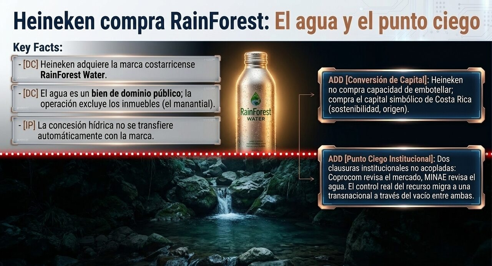
El punto ciego institucional: Coprocom revisa el mercado, el MINAE revisa el agua — dos clausuras no acopladas.
Hechos verificados
El 13 de julio de 2026, la Comisión para Promover la Competencia (Coprocom) notificó el proceso de concentración por el cual Distribuidora La Florida S.A. —la entidad legal de Heineken Costa Rica— someterá a aprobación la compra de RainForest Water RFW S.A. RainForest Water es una empresa de capital costarricense fundada en 2015, embotelladora de agua artesiana ubicada en La Esperanza de Sarapiquí (Heredia), cerca del manantial que abastece su fuente. La operación excluye propiedades inmobiliarias y está sujeta a las autorizaciones regulatorias habituales.
Sería la primera adquisición de una marca propia de Heineken en suelo costarricense. RainForest se distingue por su modelo de sostenibilidad: envases de aluminio reciclable, operación con energía renovable, e iniciativas de reforestación y conservación. Su fundador y CEO, Ariel Aizenman, enmarcó la venta como el «reconocimiento internacional a una marca país». El movimiento llega semanas después de que Coprocom aprobara la megaoperación por la cual Heineken adquirió el negocio de bebidas, alimentos y venta al detalle de FIFCO —una transacción cercana a los US$3.250 millones que integró Imperial, Pilsen, Bavaria, Musmanni y más de 50 marcas bajo el nuevo nombre «HEINEKEN Costa Rica». Esa megaoperación disparó la inversión extranjera directa a un nivel histórico: US$4.584,8 millones en el primer trimestre de 2026 (frente a US$682 millones un año antes), con la sola adquisición de FIFCO equivaliendo a cerca del 2,9 % del PIB.
Lo que la ley ya decidió · el agua nunca se vendió
El punto de partida reordena toda la pregunta: en Costa Rica el agua no se compra ni se vende. La Ley de Aguas (N.° 276) y la Ley Orgánica del Ambiente establecen que las aguas —superficiales y subterráneas— son un bien de dominio público: propiedad nacional, inapropiable por particulares. Lo que un privado puede tener no es el agua, sino una concesión de aprovechamiento: una autorización administrativa —otorgada y fiscalizada por la Dirección de Agua del MINAE— para usar un volumen definido a cambio de un canon. RainForest, por tanto, nunca fue «dueña» del manantial; y Heineken, jurídicamente, no puede estar comprando el agua: compra una marca y una operación.
Las tres piezas jurídicas que deciden el caso
La concesión está atada al inmueble. Para una naciente o manantial, la Dirección de Agua exige «Certificación Literal de Propiedad del terreno en que se aprovechará el agua». La concesión no flota libre: está anclada a la propiedad donde se capta.
La operación excluye los inmuebles. Heineken declaró que el acuerdo «no incluye propiedades inmobiliarias». Si el manantial está en un inmueble excluido, la concesión —atada a ese inmueble— no se transfiere automáticamente con la marca.
La causal de «traspaso a extranjeros» apunta a Estados, no a empresas. El artículo 26.IV de la Ley de Aguas fija como causal de caducidad el traspaso de una concesión «a favor de Gobiernos o Estados extranjeros». Heineken es una multinacional privada, no el Estado neerlandés: la causal no se activa.
Análisis epistémico · MEEE-G
Afirmación
Código
Fundamento
El proceso de concentración fue notificado a Coprocom (13 jul).
[DC]
Notificación oficial reportada por La Nación, El Financiero, Vida y Éxito.
El agua es bien de dominio público; no se compra ni se vende.
[DC]
Ley de Aguas N.° 276; Ley Orgánica del Ambiente.
La concesión está atada al inmueble de captación.
[DC]
Requisitos de la Dirección de Agua (certificación de propiedad).
Al excluir inmuebles, la concesión no se transfiere con la marca.
[IP]
Se sigue de las piezas ① y ②; falta el detalle registral concreto de RainForest.
El traspaso a Heineken no activa la caducidad por control extranjero.
[DC]
Art. 26.IV aplica a Estados extranjeros, no a empresas privadas.
RainForest posee una concesión vigente sobre su manantial.
[H]
Muy probable para una embotelladora comercial, pero no verificado en el registro al cierre.
Qué pasa con la concesión · tres caminos
Si la concesión está atada a un inmueble que la venta excluye, la operación abre —no cierra— una pregunta sobre el agua. Hay tres desenlaces jurídicamente posibles: [H]
A · Acuerdo de suministro El vendedor conserva inmueble y concesión, y suministra el agua por contrato. El control formal del recurso queda con quien tiene la tierra.B · Nueva concesión Heineken adquiere el inmueble o solicita concesión propia ante el MINAE. El recurso pasa a su control directo por trámite visible.C · Caducidad por desuso Si la fuente deja de aprovecharse tres años (Art. 26.I), la concesión caduca y el agua vuelve al dominio público.
Lectura dinámica · ADD — conversión de capital y el punto ciego
En clave de Bourdieu, la operación es una conversión de capital de manual: RainForest acumuló capital simbólico costarricense —origen, sostenibilidad, marca país— y ese capital simbólico es lo que Heineken compra, no la capacidad de embotellar (que ya tiene de sobra). La violencia simbólica opera silenciosa: la narrativa de «una marca tica que compite con las mejores del mundo» naturaliza como consagración lo que es, estructuralmente, una absorción por consentimiento —el mecanismo de colonización del mundo de la vida más eficiente, porque el habitus ya incorporó «reconocimiento internacional» como horizonte de éxito.
Pero el hallazgo central es de arquitectura institucional. La transacción la revisa la Coprocom, cuya clausura organizacional define la perturbación en términos de mercado (competencia, precio). El agua es competencia de la Dirección de Agua del MINAE, cuya lógica es la sostenibilidad del recurso. Son dos clausuras distintas y no acopladas: la que «ve» la compra no es la que gobierna el agua, y la que gobierna el agua puede no ver la compra. El resultado es un punto ciego: el control de facto sobre un bien de dominio público puede desplazarse a manos transnacionales por una operación mercantil que la autoridad del agua no está obligada a revisar. No es una violación de la ley: es un hueco entre dos clausuras institucionales.
◆ Sistemas-Mundo · el canon barato y la renta que se fuga
El régimen costarricense de concesiones ha sido criticado por académicos de la UCR como facilitador del acaparamiento del agua (water grabbing): el canon es de fracciones de colón por metro cúbico, y la normativa técnica llega a permitir concesionar hasta el 90 % del caudal medio de un río, dejando apenas un 10 % de «caudal ambiental». En ese contexto, una multinacional de alcance global que adquiere una operación de agua premium intensifica la lógica de fondo: se extrae un gradiente material —agua de un manantial tropical— pagando una fracción mínima por su uso, y se captura la renta de la marca en los mercados del núcleo. Ya no se exporta la materia prima bruta: se exporta la narrativa de origen adherida a ella, que vale más que el agua. La compra no crea esa asimetría —el canon barato ya existía—, pero la ancla a una cadena de valor transnacional que la vuelve más difícil de revertir.
▸ Afectación jurídico-formal: mínima.[IP] El agua sigue siendo pública; la concesión (si existe) está atada al inmueble excluido, no a la marca; la causal de control extranjero apunta a Estados, no a empresas privadas; y la revisión de la compra es de competencia, no de agua. No hay ruptura legal de la gobernanza hídrica desencadenada por esta transacción.
▸ Afectación de gobernanza real: sí, de un tipo sutil.[Int] El control efectivo sobre un bien público puede desplazarse a manos transnacionales por una operación que la autoridad del agua no revisa, dentro de un régimen de canon ya señalado por facilitar el acaparamiento, con la renta capturada afuera. No es una infracción: es un punto ciego institucional.
★ Relevancia para Costa Rica
[Int] Para discriminar entre «sin afectación» y «afectación real», conviene seguir tres señales: (i) si aparece en el registro de la Dirección de Agua una nueva concesión o un traspaso vinculado a la operación; (ii) si la resolución de la Coprocom incorpora consideraciones sobre el recurso hídrico o se limita a competencia; y (iii) si la gobernanza del manantial —el inmueble excluido— genera algún diferendo sobre acceso, caudal o protección de la cuenca. [C] En voz de Dussel: la pregunta ética no es si Heineken o el emprendedor obraron mal —cada uno actuó en su lógica—, sino si un país que se vende como «naturaleza» y «agua pura» tiene una arquitectura institucional que impida que el gobierno de su recurso más simbólico se decida, de hecho, en una mesa donde el agua no está sentada.
Escenarios plausibles
Plataforma de crecimiento Heineken escala RainForest a mercados globales bajo control externo; se formaliza una concesión visible ante el MINAE.Absorción con punto ciego La marca se integra al catálogo; el control del agua migra vía acuerdo de suministro sin registro en la autoridad hídrica.Fricción por la fuente La gobernanza del manantial excluido genera tensión regulatoria o comunitaria sobre el acceso al agua.
12Sociedad · Costa Rica
La octava provincia, deportada
En los primeros siete meses de 2026, las deportaciones de costarricenses desde Estados Unidos ya superaron todo el segundo semestre anterior. Detrás de la cifra, una diáspora que administra el miedo.
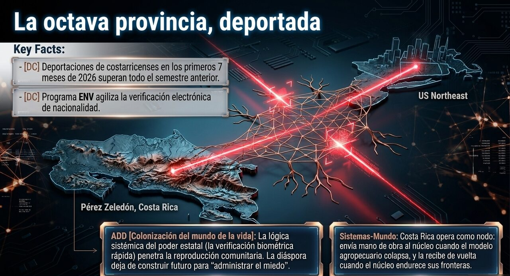
Colonización del mundo de la vida: la política migratoria del núcleo penetra la reproducción comunitaria de la diáspora tica.
Hechos verificados
Según la Dirección General de Migración y Extranjería (DGME), durante los primeros siete meses de 2026 el número de costarricenses deportados desde Estados Unidos ya superó la cantidad registrada en todo el segundo semestre del año anterior. Entre junio de 2025 y julio de 2026, 308 costarricenses regresaron al país bajo el programa ENV (Verificación Electrónica de Nacionalidad, vigente desde 2025), y 2026 concentra la mayor cantidad de deportaciones hasta el momento.
El director de la DGME, Omer Badilla, precisó un matiz epistémico importante: el programa ENV no incrementa el número de deportaciones, solo agiliza la identificación —sustituye el trámite documental por una verificación directa de nacionalidad, reduciendo el tiempo del proceso. Antes del retorno, Migración coordina la verificación de antecedentes judiciales y eventuales órdenes de captura. En paralelo, la operación distinta de recepción de deportados de terceras nacionalidades —bajo el memorando Chaves–Noem del 23 de marzo, hasta 25 personas semanales— sumaba 149 personas hacia principios de junio.
Contexto
Un editorial de La Nación del 13 de julio puso cifra al trasfondo: el Tribunal Supremo de Elecciones registra 43.686 electores costarricenses en Estados Unidos —la «octava provincia»—, cuatro de cada diez empadronados en Nueva York y Nueva Jersey. La migración de tres décadas partió de zonas como Pérez Zeledón y Los Santos, detonada por el deterioro del modelo agropecuario. El presente que retrata el reportaje: rifas comunitarias para costear el retorno de detenidos, grupos de WhatsApp que alertan de operativos, festivales de la diáspora suspendidos por riesgo migratorio. En palabras de una migrante con residencia regular, muchos viven «como si estuvieran en plena pandemia», gestionando el miedo a la redada en vez de construir futuro.
Análisis epistémico · MEEE-G
Afirmación
Código
Fundamento
Las deportaciones de ticos en 2026 superan el semestre previo.
[DC]
Estadísticas oficiales de la DGME reportadas por Diario Extra (15 jul).
El ENV agiliza pero no causa el aumento de deportaciones.
[IP]
Afirmación del jerarca de la DGME; plausible por diseño del programa, pero es fuente interesada.
El aumento responde al endurecimiento migratorio estadounidense.
[IP]
Convergencia entre el dato de retornos y el clima de operativos documentado por La Nación.
La migración irregular nace del colapso del modelo agropecuario.
[Int]
Interpretación histórico-estructural del reportaje; robusta pero no cuantificada.
Lectura dinámica · ADD
Régimen: de laminar a turbulentoParámetro de control: política migratoria del núcleo
La diáspora costarricense en el noreste estadounidense es un campo semi-autónomo paradigmático: genera sus propias reglas internas —redes de reciprocidad, alertas de operativos, colectas— y es a la vez radicalmente permeable a una fuerza sistémica externa (el aparato migratorio estadounidense) que la penetra y la desborda. Lo que el reportaje documenta es el paso de un régimen laminar (la comunidad que se reúne a celebrar la Independencia, reproducción estable de la vida comunitaria) a un régimen turbulento (la comunidad que se organiza para pagar pasajes de deportación). El parámetro de control que cruzó el umbral es la política migratoria del núcleo; la respuesta —activación de capital social— es determinada por la organización interna de la comunidad, no por la perturbación.
En clave de Habermas, es colonización del mundo de la vida en estado puro: la lógica sistémica del poder estatal (la redada, la orden de captura, la verificación electrónica) penetra el dominio de la reproducción social de una comunidad y sustituye la construcción de futuro por la gestión del miedo. El ENV es, literalmente, la interfaz técnica de esa colonización: convierte la identidad —la nacionalidad— en un dato verificable en segundos para acelerar la expulsión. La disipación es real, en el sentido estricto de la ADD: sostener la organización comunitaria bajo esa presión tiene un costo, y el reportaje muestra a un sistema que empieza a no poder pagarlo (festivales que se suspenden, migrantes que ya no recomiendan «el sueño»).
◆ Sistemas-Mundo
La «octava provincia» es la contracara humana de la posición semiperiférica de Costa Rica: la mano de obra que el deterioro del agro expulsó fluyó hacia el núcleo, sosteniendo con remesas la reproducción de las familias que quedaron. El endurecimiento migratorio revierte ese flujo y expone la asimetría estructural: la periferia envía trabajo cuando el núcleo lo necesita y lo recibe de vuelta cuando no. La coincidencia con la nota sobre deportados de terceros países revela el rol asignado: Costa Rica opera simultáneamente como origen de migrantes retornados y como plataforma de deportación de terceros —dos funciones de nodo dentro de la arquitectura migratoria que el núcleo administra.
★ Relevancia para Costa Rica
[Int] El editorial de La Nación señala la debilidad de fondo: la migración se ha dejado como «asunto de suerte individual y colecta comunitaria» en lugar de convertirse en política de Estado. La capacidad de transformación del país está en tratar a la diáspora como parte constitutiva de la nación —consular, económica, políticamente— y no como un dato electoral lejano.
[C] En voz de Dussel, el sujeto de esta nota es el excluido por partida doble: expulsado del modelo agropecuario en origen y perseguido como irregular en destino. La pregunta normativa —no predictiva— es qué debe una nación a quienes se fueron porque el modelo interno no los sostuvo.
Escenarios plausibles
Política de diáspora El país articula servicios consulares, reinserción y vínculo económico; convierte el retorno forzado en reintegración ordenada.Gestión reactiva El Estado administra los retornos caso a caso sin marco integral; la comunidad sigue supliendo con redes informales.Presión sostenida El endurecimiento continúa; aumentan retornos y caen remesas, con impacto en las zonas rurales de origen.
08Ciencia · Paleobiología y clima
La Gran Mortandad, confirmada: el océano que no pudo respirar
Un estudio de Stanford cierra el debate sobre por qué murió el 96 % de la vida marina hace 252 millones de años —y por qué las condiciones que lo causaron se parecen incómodamente a las de hoy.
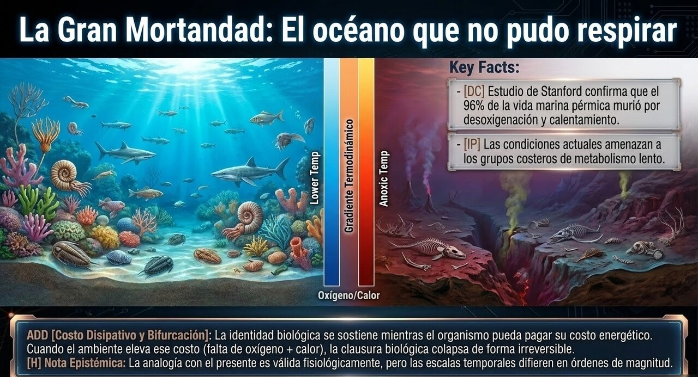
El gradiente termodinámico oxígeno/calor: la fauna paleozoica no pudo pagar el costo energético que el calentamiento le impuso.
Hechos verificados
Un equipo liderado por Stanford publicó el 6 de julio de 2026 en PNAS (Marquez et al.) lo que su autor senior, Erik Sperling, describe como «el clavo final en el ataúd» del misterio de la extinción del Pérmico-Triásico. Hace unos 252 millones de años, la «Gran Mortandad» eliminó cerca del 96 % de las especies marinas y el 70 % de las terrestres. El disparador ya se conocía: el vulcanismo de las Traps siberianas inundó la atmósfera de gases de efecto invernadero y calentó el planeta. Lo que faltaba explicar era la selectividad: por qué unos grupos murieron y otros sobrevivieron.
La respuesta es fisiológica. Al calentarse, el océano retiene menos oxígeno; y los animales de la «fauna paleozoica» —braquiópodos, crinoideos («lirios de mar»), organismos lentos de metabolismo bajo— vieron cómo su demanda de oxígeno crecía con el calor más rápido de lo que sus cuerpos podían satisfacerla. La «fauna moderna» —almejas, caracoles, peces, erizos, de metabolismo más veloz— toleró mejor el doble golpe de calor y desoxigenación, sobrevivió y domina los mares desde entonces. Los investigadores midieron el metabolismo de braquiópodos vivos para llenar el vacío de datos que un estudio previo de 2018 (Science) había dejado. La conclusión inquietante: la temperatura subió entonces 8–12 °C en miles de años; hoy se proyectan 1,5–4 °C en apenas 100–200 años. «Vamos camino a niveles de calentamiento del Pérmico-Triásico en los peores escenarios», advierte Sperling —«pero todavía estamos a tiempo de hacer algo».
Contexto
Cada concha de almeja en la playa es, literalmente, el residuo de aquella selección: los grupos comunes hoy lo son porque sus ancestros sobrevivieron una crisis que destruyó a sus rivales. El estudio no solo explica el pasado; ofrece un modelo de cómo la vida marina actual respondería a un océano más cálido y con menos oxígeno.
Análisis epistémico · MEEE-G
Afirmación
Código
Fundamento
Calentamiento + desoxigenación causaron la selectividad de la extinción.
[DC]
Estudio revisado por pares en PNAS; datos fisiológicos nuevos sobre fauna paleozoica.
Las Traps siberianas fueron el disparador último.
[DC]
Consenso geoquímico consolidado, previo a este estudio.
Las condiciones actuales podrían «repetir la historia».
[IP]
Analogía fisiológica fundada, pero la escala temporal actual difiere en órdenes de magnitud; proyección de peor escenario.
«El clavo final en el ataúd» del debate.
[Int]
Valoración del propio autor; robusta pero es una interpretación sobre el cierre de un debate científico.
Lectura dinámica · ADD
Régimen: bifurcación literal, no analógicaAnalogía: literal (nivel fisiológico-disipativo)Parámetro de control: tolerancia fisiológica al gradiente térmico-oxigénico
La extinción es el caso límite de una bifurcación en el sentido estricto de Prigogine, y aquí el parámetro de control está perfectamente identificado —requisito que la ADD exige antes de usar el término—: la tolerancia fisiológica al gradiente térmico-oxigénico. Cruzado el umbral, el sistema (la biosfera marina) se reorganizó en un estado radicalmente nuevo e irreversible: la fauna moderna no «ganó» por superioridad, sino porque su organización interna —su metabolismo— procesaba la perturbación sin desbordarse. Es la ilustración más nítida del principio disipativo de la ADD: la identidad de un sistema vivo se sostiene mientras pueda pagar su costo energético; cuando el ambiente eleva ese costo por encima de lo que el metabolismo puede aportar, la clausura organizacional colapsa. No es metáfora: es la termodinámica del oxígeno operando como selector.
◆ Sistemas-Mundo
La ciencia que produce este hallazgo es también un mapa de poder: financiada por la NSF, la NASA y fundaciones del núcleo, ejecutada en instituciones del núcleo, con muestras recolectadas globalmente. El conocimiento sobre la vulnerabilidad climática planetaria —un bien público global— se produce y se posee de forma asimétrica. La advertencia de Sperling es universal, pero la capacidad de usarla —de investigar, modelar y adaptarse— está distribuida según la misma geografía núcleo-periferia que el resto de la economía-mundo. La periferia tropical, que aporta buena parte de la biodiversidad marina en riesgo, es la que menos capacidad tiene de estudiar su propia exposición.
★ Relevancia para Costa Rica
[IP] Costa Rica es un país de dos océanos con economías costeras —pesca, turismo, biodiversidad marina— directamente expuestas al calentamiento y la desoxigenación oceánica. El estudio no es una curiosidad paleontológica: es un modelo predictivo de qué grupos costeros son más vulnerables (los de metabolismo lento y baja tolerancia), información relevante para la gestión de arrecifes y manglares del Pacífico y el Caribe.
[Int] La resiliencia posible pasa por la capacidad científica nacional (UCR, CIMAR) de monitorear localmente lo que el modelo global anticipa. Aquí se enlaza con el dilema recurrente del boletín: si el país invierte en su institucionalidad de conocimiento, puede leer su propia vulnerabilidad; si la recorta, queda dependiendo de la ciencia del núcleo para entender su propio mar.
Escenarios plausibles
Ventana de acción El hallazgo refuerza la urgencia de mitigación; se traduce en gestión marina basada en tolerancia fisiológica.Consolidación científica El estudio cierra el debate académico pero tiene bajo impacto en política; queda como referencia técnica.Analogía tensionada Investigaciones posteriores matizan la comparación con el presente por la diferencia de escalas temporales.
07Ciencia · Física de la materia + IA
La IA descifra la doble personalidad del agua
Un modelo de aprendizaje automático de la Universidad de Osaka ordenó por fin 16 formas rivales de describir el agua supercongelada —y ayudó a distinguir sus dos estados líquidos ocultos.
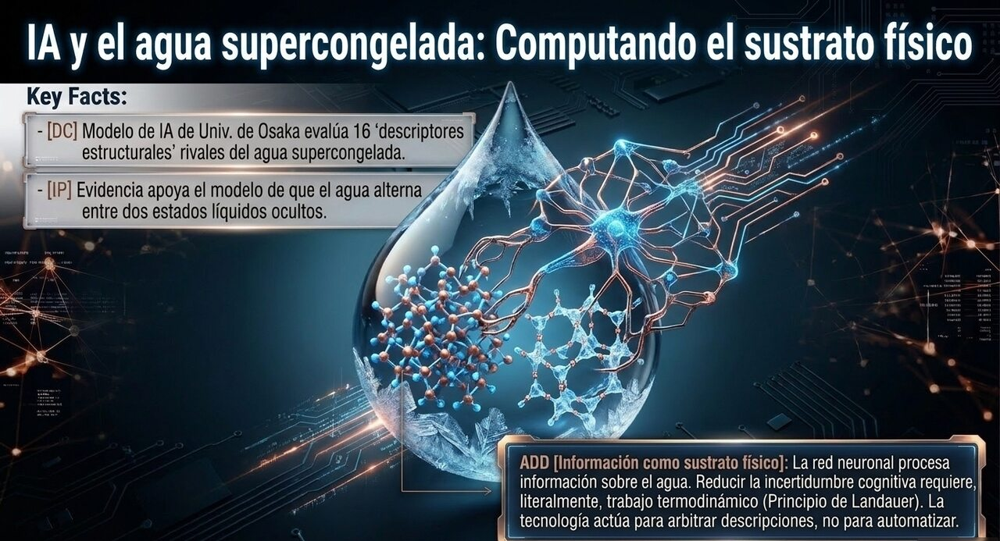
Información como sustrato físico: la red neuronal computa sobre el agua, y ese cómputo tiene un costo termodinámico real (Landauer).
Hechos verificados
Investigadores de la Universidad de Osaka publicaron el 6 de julio de 2026 en Communications Chemistry (Yoshikawa, Shikata et al.) un marco basado en una red neuronal que evalúa y compara 16 «descriptores estructurales» —herramientas matemáticas desarrolladas de forma independiente durante tres décadas para medir el orden molecular del agua. El modelo, entrenado con simulaciones, identifica cuáles distinguen mejor los dos estados líquidos rivales del agua: uno de alta densidad (HDL) y otro de baja densidad (LDL). La IA logra, de hecho, predecir la temperatura a partir de la configuración molecular.
El problema que resuelve es real: el agua es anómala —se expande al congelarse, alcanza su densidad máxima a 4 °C— y esas rarezas se explican por transiciones entre esas dos estructuras locales, especialmente en estado supercongelado (líquida por debajo de su punto de congelación, en ausencia de sitios de nucleación). Pero faltaba un esquema sistemático para comparar las decenas de formas de describir esos cambios. El trabajo se enlaza con evidencia molecular reciente (Nature Physics, junio de 2026) a favor del modelo de dos estados y de una hipotética transición líquido-líquido.
Contexto
La nota tiene un doble filo que interesa a la ADD: es ciencia básica sobre la sustancia más común y peor entendida del planeta, y es un caso de tecnología —la IA— usada no para automatizar, sino para ordenar el conocimiento existente: no descubre el fenómeno, arbitra entre las descripciones humanas rivales de él.
Análisis epistémico · MEEE-G
Afirmación
Código
Fundamento
La red neuronal evalúa y jerarquiza los 16 descriptores estructurales.
[DC]
Estudio revisado por pares en Communications Chemistry.
El agua supercongelada alterna entre estados HDL y LDL.
[IP]
Modelo de dos estados, con evidencia de simulación creciente; aún debatido en su versión fuerte (transición líquido-líquido).
La IA «descubrió» un secreto del agua.
[Int]
Titular divulgativo; con rigor, la IA arbitra descripciones, no revela una entidad nueva.
El segundo punto crítico del agua existe.
[H]
Hipótesis teórica de larga data, aún sin confirmación experimental directa.
Lectura dinámica · ADD
Este hallazgo toca el fundamento mismo del programa ADD. El agua supercongelada es un sistema que puede reorganizarse en dos estructuras según su parámetro de control (temperatura, presión): una bifurcación en el sentido literal, físico del término —la clase de fenómeno del que Prigogine extrajo el concepto que la ADD luego traslada, con analogía declarada, al mundo sociocultural. Ver la bifurcación operando en su registro originario es un recordatorio metodológico: cuando la ADD habla de «bifurcación» en una comunidad, hace una analogía fuerte, no una descripción literal como esta.
Hay un segundo nivel, más profundo, en clave del estatuto informacional de la ADD: el estudio es un caso de procesamiento de información con costo disipativo (Landauer). La red neuronal no adivina; computa —y ese cómputo tiene un costo energético físico real. La IA aquí es un sistema disipativo que procesa información sobre otro sistema disipativo (el agua). El nivel 1 del esquema ADD —la información como sustrato relacional común a lo físico y lo cognitivo— se vuelve tangible: reducir la incertidumbre sobre la estructura del agua es, literalmente, trabajo termodinámico.
Reducir la incertidumbre sobre la estructura del agua es, literalmente, trabajo termodinámico: la IA no adivina, computa —y ese cómputo tiene un costo energético real.
◆ Sistemas-Mundo
La IA aplicada a la ciencia básica reconfigura la geografía de la producción de conocimiento: quien controla la capacidad de cómputo controla la velocidad a la que puede ordenar y arbitrar el conocimiento acumulado. Es un nuevo gradiente —el computacional— que se superpone a los existentes. Japón, potencia del núcleo con capacidad de cómputo propia, ordena en un paper lo que tres décadas de trabajo humano disperso no habían podido sistematizar. La ventaja no está solo en descubrir, sino en organizar más rápido: una forma de acumulación cognitiva que profundiza la asimetría con las periferias que carecen de esa infraestructura.
★ Relevancia para Costa Rica
[C] El agua no es un tema neutro para Costa Rica: la nota 04 mostró una marca de agua cambiando de dueño; esta muestra la frontera del conocimiento sobre la sustancia. La conjetura útil es que la comprensión fina del comportamiento del agua —nucleación, estados, congelación— tiene aplicaciones en conservación, criopreservación de biodiversidad y gestión hídrica, campos donde el país tiene activos naturales pero capacidad computacional limitada.
[Int] La oportunidad realista no es competir en cómputo de frontera —eso es capacidad de núcleo— sino articularse con esas redes desde el conocimiento aplicado. El riesgo estructural, otra vez, es quedar como proveedor de un recurso (agua, biodiversidad) cuyo conocimiento profundo se produce afuera.
Escenarios plausibles
Estándar de campo El marco de Osaka se adopta como método común; acelera el estudio del agua y de otros líquidos anómalos.Herramienta de nicho Útil para especialistas pero de adopción lenta; el debate sobre los dos estados sigue abierto.Confirmación experimental La evidencia converge hacia la transición líquido-líquido y el segundo punto crítico; giro conceptual mayor.
Síntesis de la semana
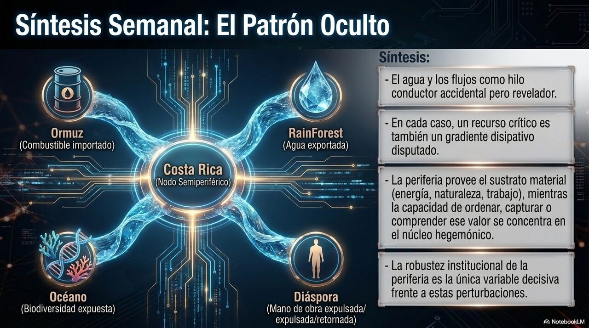
El patrón oculto: Costa Rica como nodo semiperiférico acoplado — provee sustrato material, el núcleo concentra la capacidad de ordenar, capturar o comprender su valor.
Tres de las seis notas comparten, sin proponérselo, un mismo elemento: el agua. El estrecho por el que fluye la energía (01), el manantial que cambia de dueño (04) y el océano que dejó de respirar hace 252 millones de años y el líquido que la IA apenas empieza a entender (08, 07). Es coincidencia temática, no causal —pero permite ver una constante estructural: en cada caso, un recurso o sustancia crítica es también un gradiente disipativo disputado, y en cada caso la periferia costarricense aparece como nodo expuesto que provee sustrato material (combustible que importa, agua que exporta como marca, biodiversidad marina en riesgo) mientras la capacidad de ordenar, capturar o comprender ese valor se concentra en el núcleo.
La diáspora deportada (12) cierra el cuadro por el lado humano: el mismo país que provee agua y biodiversidad provee también mano de obra al núcleo, y la recibe de vuelta cuando el núcleo endurece sus fronteras. Ninguna de estas dinámicas es determinista. Pero vistas juntas, dibujan la posición de Costa Rica como lo que la ADD llama un nodo semiperiférico acoplado: no víctima pasiva ni agente autónomo, sino sistema que procesa perturbaciones globales según una organización interna cuya robustez —institucional, científica, política— es, ella misma, la variable decisiva.
Tema
Epistémico (MEEE-G)
Dinámica (ADD)
Sistemas-Mundo
Ormuz
Colapso del cese [DC]; ataque atribuido a Irán [IP]; guerra ampliada [H]
Turbulencia oscilante sin bifurcación resuelta
Cuello de botella energético; turbulencia terminal del ciclo hegemónico
Dólar / BRICS+
Dólar ~58 % de reservas [DC]; moneda común archivada [DC]; transición hegemónica [H]
Laminar en el centro, turbulencia creciente en los bordes
Otoño del ciclo hegemónico (Arrighi); crisis-señal, no terminal
Heineken / RainForest
Notificación a Coprocom [DC]; agua es dominio público [DC]; concesión no se transfiere [IP]
Punto ciego entre dos clausuras institucionales no acopladas
Canon barato; captura de renta simbólica en el núcleo
Octava provincia
Deportaciones superan semestre previo [DC]; ENV no causa el aumento [IP]
De régimen laminar a turbulento; colonización del mundo de la vida
Semiperiferia que envía y recibe mano de obra según el ciclo del núcleo
Gran Mortandad
Calor + desoxigenación causaron la selectividad [DC]; «repetir la historia» [IP]
Bifurcación literal: tolerancia fisiológica como parámetro de control
Conocimiento climático producido y poseído de forma asimétrica
IA y el agua
Red jerarquiza 16 descriptores [DC]; dos estados HDL/LDL [IP]; 2.º punto crítico [H]
Bifurcación física literal; cómputo como trabajo disipativo (Landauer)
Nuevo gradiente computacional que profundiza la asimetría núcleo-periferia
Incertidumbres abiertas
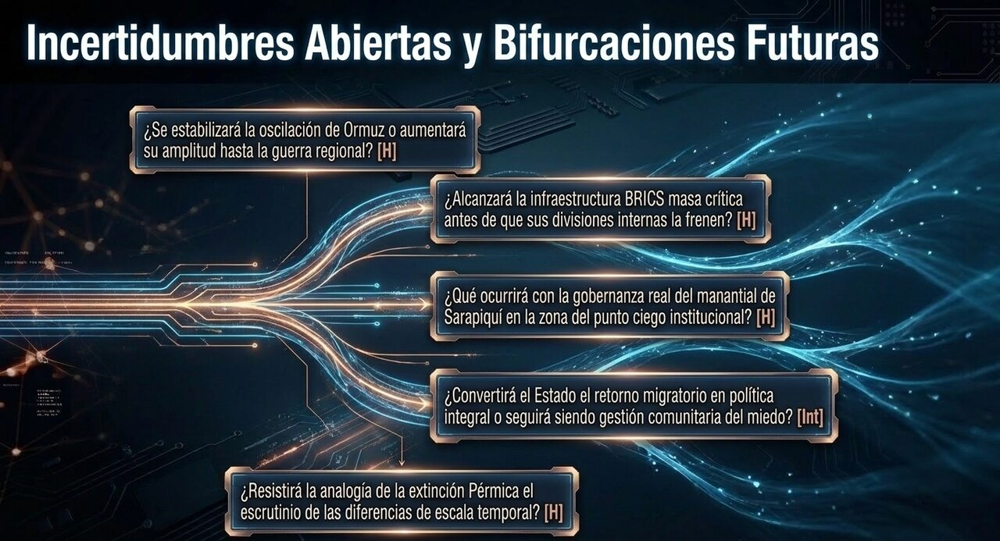
Bifurcaciones futuras: las seis preguntas que esta edición deja abiertas para el próximo cierre.
¿Se estabilizará la oscilación de Ormuz en un nuevo equilibrio o cada ciclo aumentará su amplitud hasta la bifurcación? [H]
¿La infraestructura de pagos BRICS alcanzará masa crítica antes de que las divisiones internas la frenen? [H]
¿Qué ocurrirá con la gobernanza del manantial de Sarapiquí, excluido de la venta de la marca? [H]
¿Convertirá Costa Rica el retorno migratorio en política de Estado o seguirá siendo gestión comunitaria del miedo? [Int]
¿Resistirá la analogía Pérmico-presente el escrutinio, dada la diferencia de órdenes de magnitud en la escala temporal? [H]
¿El caso SpudCell (seguimiento de la N.° 012) recibirá validación por pares? Hilo aún abierto, sin novedad epistémica esta semana. [H]
Fuentes · APA 7
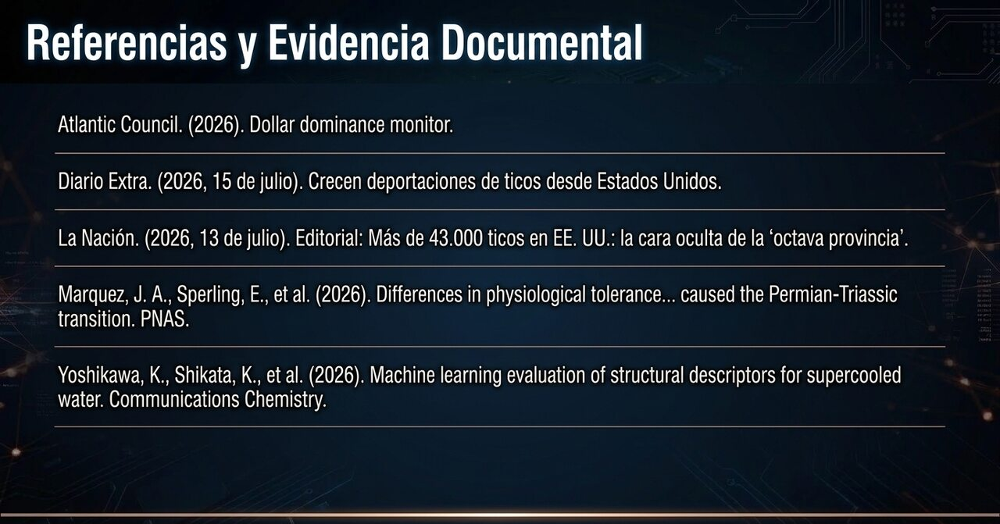
Fuentes consultadas — bibliografía APA 7 del Boletín Semanal N.° 013.
Atlantic Council. (2026). Dollar dominance monitor. https://www.atlanticcouncil.org/programs/geoeconomics-center/dollar-dominance-monitor/
CNBC. (2026, 14 de julio). U.S. targets military assets in latest round of strikes against Iran. https://www.cnbc.com/
Diario Extra. (2026, 15 de julio). Crecen deportaciones de ticos desde Estados Unidos. https://www.diarioextra.com/
Gulf News. (2026, 9 de julio). US–Iran war escalates: ceasefire collapses, Gulf shipping and oil markets at risk. https://gulfnews.com/
La Nación. (2026, 30 de junio). Compra de Heineken de negocios de Fifco dispara inversión extranjera a niveles récord. https://www.nacion.com/
La Nación. (2026, 13 de julio). Editorial: Más de 43.000 ticos en EE. UU.: la cara oculta de la "octava provincia". https://www.nacion.com/
Lagerkranser, P. (2026, 14 de julio). Collapse of US-Iran peace deal shakes global fuel markets. Bloomberg. https://www.bloomberg.com/
Marquez, J. A., Sperling, E., Payne, J., et al. (2026). Differences in physiological tolerance to global warming caused the Permian-Triassic transition between the Paleozoic and Modern faunas. Proceedings of the National Academy of Sciences, 123(28). https://doi.org/10.1073/pnas.2533086123
Ortega Campos, G. (2026, 13 de julio). Heineken Costa Rica inicia proceso para comprar la empresa Rainforest Water. La Nación. https://www.nacion.com/
Revista Summa. (2026, 14 de julio). Marca costarricense RainForest Water anuncia acuerdo para su adquisición por parte de Heineken Costa Rica. https://revistasumma.com/
Rio Times. (2026). BRICS 2026: complete guide. https://www.riotimesonline.com/
Sánchez, S. (2026, 4 de junio). Costa Rica alcanza la cifra 149 migrantes deportados por Estados Unidos tras la llegada del séptimo grupo. La Nación. https://www.nacion.com/
Stanford Report. (2026, julio). Researchers confirm cause of Earth's biggest mass extinction. https://news.stanford.edu/
The Business Standard. (2026, 26 de enero). BRICS 2026: implications for a multipolar world. https://www.tbsnews.net/
Yoshikawa, K., Shikata, K., et al. (2026). Machine learning evaluation of structural descriptors for supercooled water. Communications Chemistry. https://doi.org/10.1038/s42004-026-02097-1
Marco teórico: Arrighi, G. (1994). The Long Twentieth Century. Verso; Wallerstein, I. (2004). World-Systems Analysis. Duke UP.
Asamblea Legislativa. Ley de Aguas N.° 276 (arts. 1, 3, 26). · MINAE, Dirección de Agua. Canon por aprovechamiento de aguas (Decreto N.° 32868). · UCR, Voz Experta. (2026, marzo). Las concesiones y el acaparamiento del agua en Costa Rica.
Nota metodológica. El presente boletín combina evaluación epistémica explicacionista basada en la Matriz Explicacionista de Evaluación Epistémica (MEEE-G), fundamentada en la epistemología fiabilista de Alvin I. Goldman, con el análisis dinámico de la Antropología Dinámica del Devenir (ADD) de Alfredo Montero Fonseca, y una capa estructural de análisis de sistemas-mundo (Wallerstein/Arrighi). Los tres registros son no colapsables: cada uno describe una dimensión distinta del fenómeno. Toda afirmación está clasificada por su estatus epistémico —[DC] dato confirmado, [IP] inferencia plausible, [H] hipótesis, [Int] interpretación, [C] conjetura. El análisis no constituye predicción determinista ni recomendación política. Las inferencias e interpretaciones representan el mejor juicio analítico disponible al cierre de la edición.